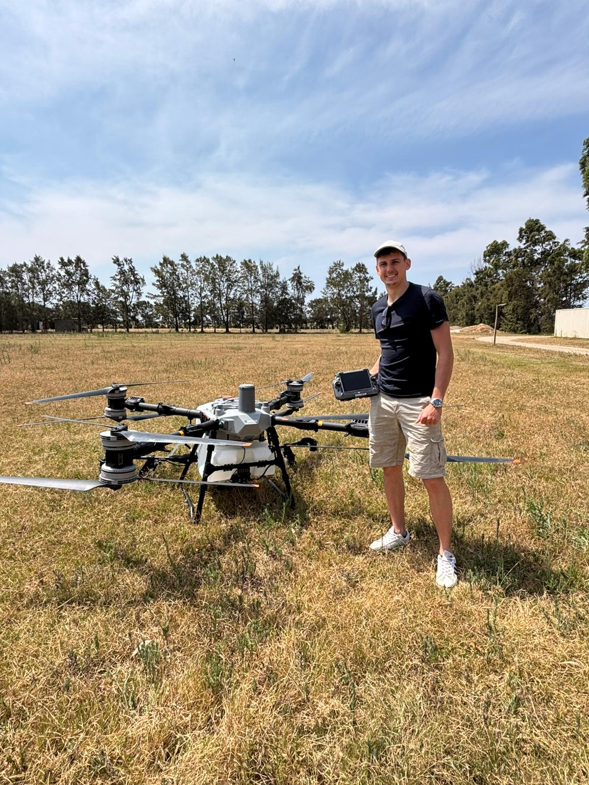

Soluciones aéreas con DJI Agras T100. Ahorra hasta 39 USD/ha y gana semanas de tiempo.
(Spare bis zu 39 USD/ha und vermeide das Niedertrampeln!)
Ideal para maíz y soja. Aplicación de fungicidas e insecticidas sin pérdidas del 3-5%.
Cultivos de cobertura sobre cultivo en pie. Ahorra semanas de tiempo.
Urea y fósforo incluso con falta de piso. Salva tu cosecha cuando el tractor no entra.
Control de malezas en bajos y zonas complicadas. Aplicación quirúrgica.

Nuestra Misión: Ayudar a los agricultores y granjeros a ahorrar agua, agroquímicos y dinero, mientras protegemos el suelo y las plantas.
En Kunz Agrotech, combinamos la precisión de la tecnología alemana con el conocimiento del campo uruguayo. Utilizamos drones de última generación (DJI T100) para realizar aplicaciones más eficientes, reduciendo el impacto ambiental y maximizando su rentabilidad.
ContáctanosNo espere a la cosecha. Siembre su ganancia antes.
Siembra aérea sobre cultivo = Pastoreo anticipado (Más Carne/Leche).